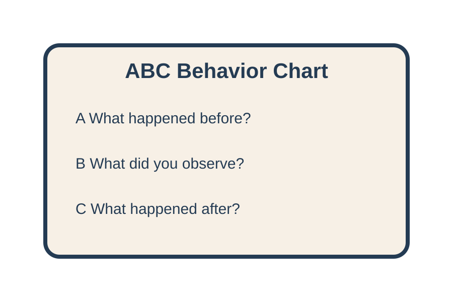
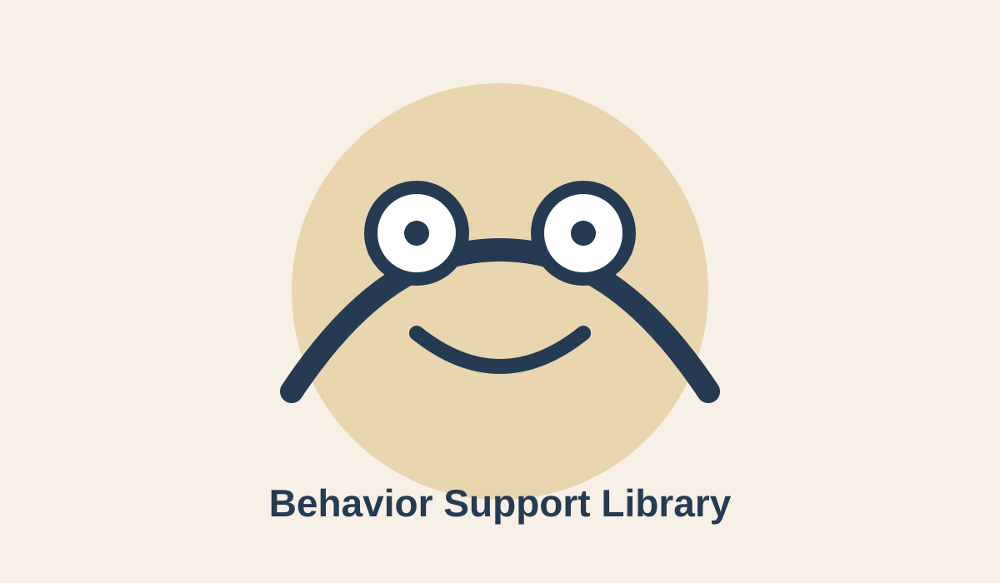
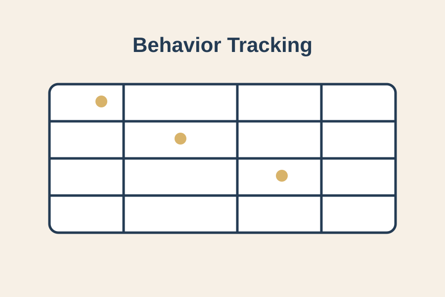
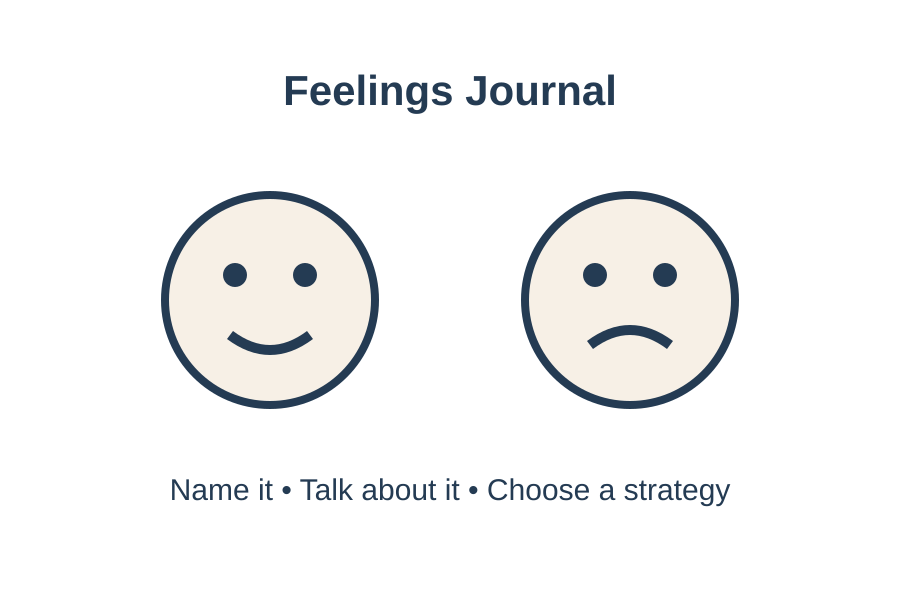
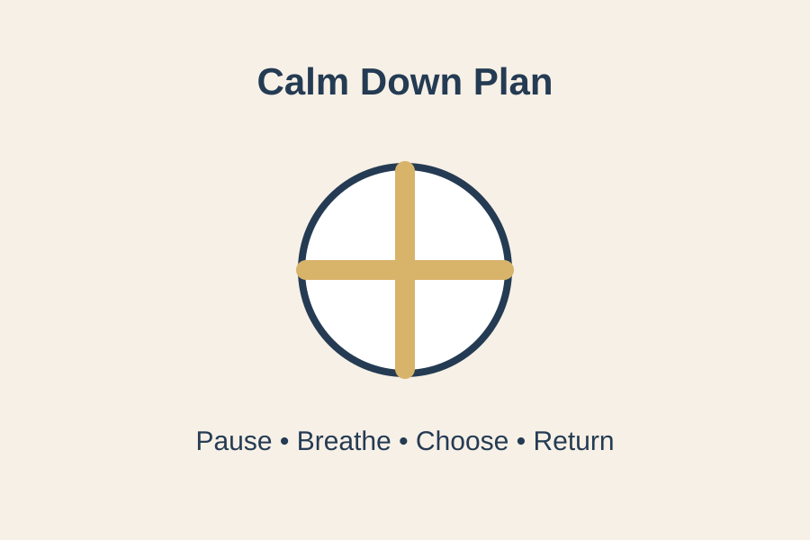
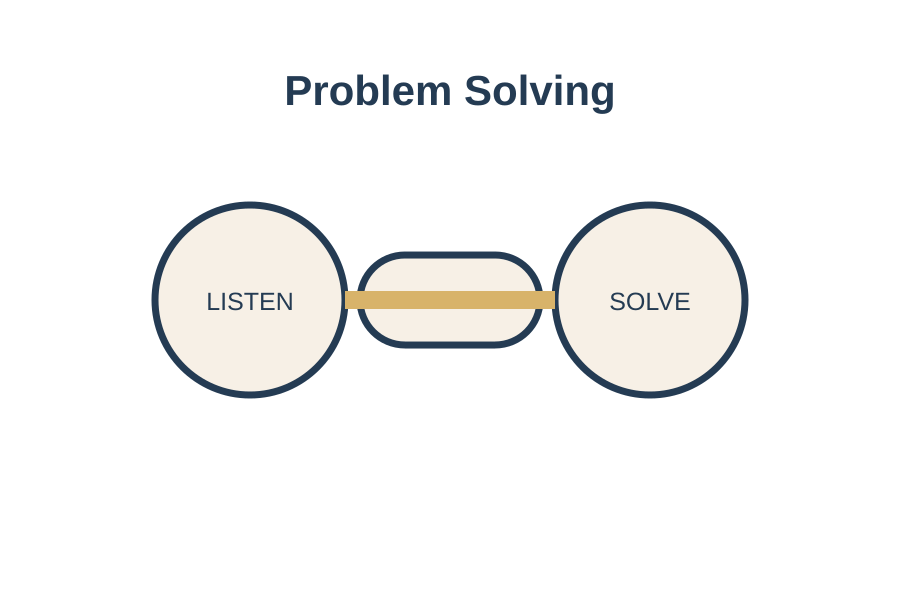
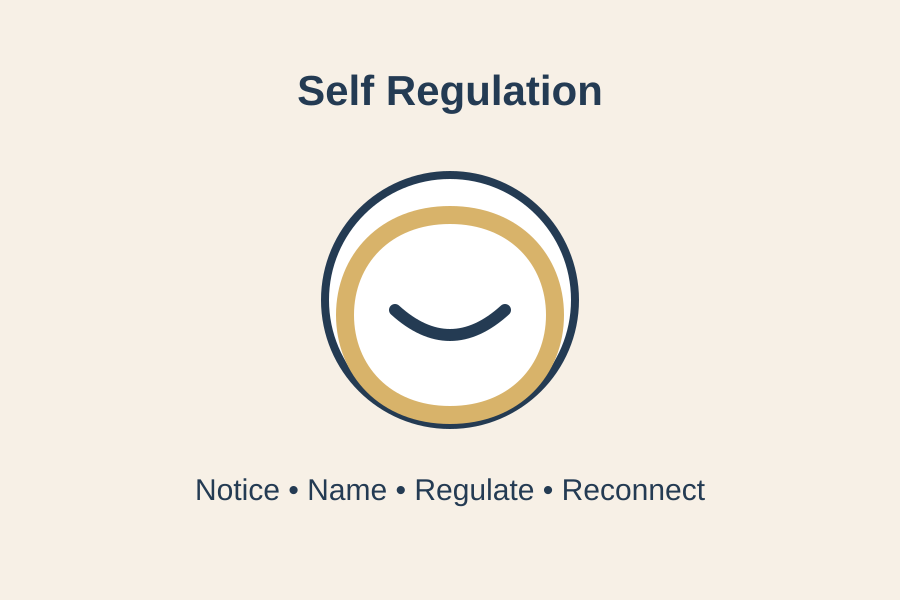

👀 ABC Behavior Chart
Document what happens before, during, and after behaviors.
Access positive guidance resources, behavior support tools, social emotional learning materials, documentation forms, and classroom strategies designed for Early Head Start, Head Start, Preschool, and Pre-K educators.

The Behavior Resource Library provides educators with practical tools to understand children's behavior, document classroom experiences, support emotional development, and create positive learning environments where children feel safe, valued, and supported.
Find practical classroom tools that help educators understand behavior, support children's emotions, and create positive learning environments.
Document children's behaviors, interactions, triggers, interests, and classroom experiences through meaningful observation.
View Tools →Record behavior patterns, classroom situations, teacher responses, and support strategies.
View Forms →Support emotions, friendships, communication, self awareness, and emotional development.
Explore Resources →Create predictable routines, visual supports, expectations, and positive learning environments.
View Tools →Help children solve problems, develop social skills, and learn appropriate classroom behaviors.
Explore Guidance →Support calming strategies, emotional awareness, coping skills, and independence.
View Resources →Print and use the Behavior Support Toolkit for observation, positive guidance, social emotional learning, and self regulation planning.

Document what happens before, during, and after behaviors.

Track classroom behaviors, patterns, supports, and progress over time.

Help children identify emotions, express feelings, and develop emotional awareness.

Support children with calming strategies, emotional regulation, and problem solving.

Guide children through communication, friendship challenges, and peaceful conflict resolution.

Provide strategies that build independence, coping skills, and emotional control.
Find developmentally appropriate behavior and social emotional resources for different early childhood learning stages.
Support communication, relationships, routines, sensory needs, and emerging emotional development.
Explore Resources →Support independence, friendships, emotional expression, classroom routines, and problem solving.
Explore Resources →Support self regulation, cooperation, communication, responsibility, and school readiness.
Explore Resources →The Behavior Support Toolkit includes reflection, planning, routine, feelings, friendship, and self regulation pages.
Reflect on classroom situations, children's needs, responses, and next steps.
Print Tool →Create individualized support strategies based on observation and children's strengths.
Print Tool →Teach cooperation, kindness, turn taking, and positive peer relationships.
Print Tool →Plan intentional opportunities to build coping skills and independence.
Print Tool →